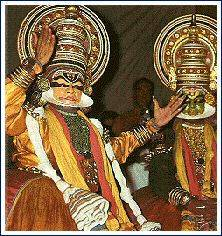

There is not a region, valley or a coast in India not having its own special folk songs and folk dances. Their themes revolve around the simple daily tasks - such as harvests, fishing etc. Like Divali, at times, it is a festival. All the same, certain characteristics are shared; the way the knees are bent, hips are swayed, moving in rhythmic circles, clapping to keep timing men, women and children participate, there is no entertainer... just full entertainment for all! From these emerge the varied classical dances. The history of Indian art-dances cannot be traced backwards beyond a few hundred years as Mrs. Gauri Menon finds out...
In Rig Veda, there is a description of the dance of Urvasi - a devangana of the Indrasabha.The story goes that once there lived a handsome and mighty ruler Pururavas, the founder of the Chandra dynasty He was so famous and good that even Doves admired him. The divine damsel Urvasi was so overwhelmed by the fame of this mortal king that while dancing she began muttering his name in the place of Purushothama (Vishnu). This enraged the great rishi Bharatha. Urvasi was defying the principles enunciated in his Natya Sastra. "Go down to Earth and live as the wife of that mortal King", the rishi cursed. Urvasi spent some years with Pururavas until Prince Ayus was horn. This story might be a myth, but what a marvel! The different classical dances in India still adhere to the principles of the great rishi's Natya Sastra - namely to the division of dance into Nritha - the pure abstract form, Nrithya dance with mime or rhythm, Thandava the style followed by men in dance and Lasya, the style for women dancers For all classical dances musical accompaniments are a must a vocalist, a percussion instrument player, a cymbal player who also recites the neumonics and lastly one who follows the vocalist on a stringed instrument such as violin. Veena is never used as an accompaniment as it is deemed a Deva vadya.
Five dance styles are fully accepted as classical or art dances on account of their sophisticated degree of presentation. They are Bharatha Natyam. Odissi Manipuri Kathak and Kathakali. Kathakali is undoubtedly the most developed and sophisticated of all dance dramas in India.
Kathakali, the classical dance drama of Kerala, is quite different from the styles of the other four. In the first place, it is dramatic and not just narrative in character. Until recently, the dancers were all men. Different characters have different costumes and make up. Epics or mythological stories are taken as themes. The puranic characters are portrayed with an unworldly supernatural grandeur. The characters according to their nature fall into certain distinct categories.
Pacha (Green): Famous rulers on the puranic stories who stood for truth and justice Example: Sree Rama, Dharmaputhra and King nnnnNala. Peacock feathers adorning The crown is solely for Krishna.
Kathi Vesham: Royals having valour and ferocity. Over the green paint on the lace are streaks of red and black. Also, a white blob on the nose. To proclaim their cruel nature, at times, they make hideous sounds Ravana and Duryodhana are examples.
"The large-sized colourful costumes, the elaborate make-up on face with the booming sound of the Maddalam and Melachenda, and the haunting melody of the songs transport the audience into a mystical world."
Chukanna Thadi (Red Beard): The over-sized red dress, face painted red with black streaks, lips coloured black and teeth protruding, very huge crown again red and gold on the head. His form is really scary. Example: Dussasana, the younger brother of Duryodhana.
Karutha Thadi (Black beard): Even the head dress is black, very repulsive. Example: characters like Kali and certain demons.
Kari Vesham: Attired in dirty black clothes with a black conical cap, again an ugly form, essentially an evil female character.
Velutha Thadi: Though gigantic in size, like Red Beard and Black Beard, this is a noble character unlike the other two. Example: Hanuman.
Minnukku: Is the common term or characters representing Saints or Rishis — also good women. The Saints are clad in white dress. Head is covered with a white cloth for female characters Women look radiant in their pleated white and gold costume adorned in traditional jewellery and hair neatly made into a bun on the side. Characters like Kuchela (men) and Draupadi, Damayanthi or Seetha (women).
The play begins with two men holding a colourful satin cloth as a curtain. While the actor remains partly hidden, one might see the tip of his crown or his fingers as he too hold the curtain in the middle. In a flash, the curtain is pulled down and then you see the actor in all his splendour. The naked flame of the traditional lamp, kalivilakku, enhances the effect of the dancer's facial expressions. The main vocalist sings keeping thala on chengala while an assistant joins in the singing with elathala in his hands. Special drums called melachenda and maddalam are played. The actor demonstrates appropriate hand gestures (mudras) and expressive muscle movements in the face and eyes. The different phases are cholliyattam ilakiyattam and kalasam. Students undergo rigorous training for years to acquire perfection in abhinaya and eye movement. The nine emotions known as navarasa, a talented dancer expresses easily, bringing each emotion in his eyes according to the context.
Kathakali is undoubtedly the most developed and sophisticated of all dance- dramas in India though plays like Yakshagana of Mysore do maintain a good standard. It has reached the high position in the art world due to the selfless service of some very good people like Vallathol Narayana Menon, the poet, who founded the world-famous Kerala Kala Mandalam, an institute dedicated to Kathakali and other fine arts.
The origin of Kathakali is chequered too. In the ninth century of Malayalam era, one Manavedan Raja of Kozhikkodu composed Krishnageethi. He was influenced by Jayadeve's Geetha Govindam. In Geetha Govindam, there are only three characters - Krishna, Radha and another gopika, Radha's friend. The Raja took the dasamaskanda of Maha Bhagavatha and dividing it into eight parts told the whole story of Sree Krishna from avathaaram to swargarohanam.
This Krishna-geethi became Krishanattam. One part would be played one night in the temple premises and devotees would watch without one wink of sleep. It still continues in the Guruvayoor temple. It did not take long for another gifted writer, the Raja of Kottarakkara to compose a similar one about Sree Rama. He took Ramayana, divided it into eight parts and wrote eight plays, called it Ramanattam. The story is that Manavedan Raja failed to show his work to the Raja of Kottarakkara. Accepting the challenge, the latter started his Ramanattam. Ramanattam became very popular, the main reason being while both Geetha Govindam and Krishnattam are in pure Devanagiri - almost Greek and Latin to the average individual. Kottarakkara chose the lovely Manipravala language - pure spoken Malayalam with a smattering of Sanskrit words and people enjoyed it as they could understand the language.
It is this Ramanattam that changed its name to Kathakali. During the last hundred years many Kathakali plays have been written, techniques and other improvements made and consequently this art has earned international recognition.